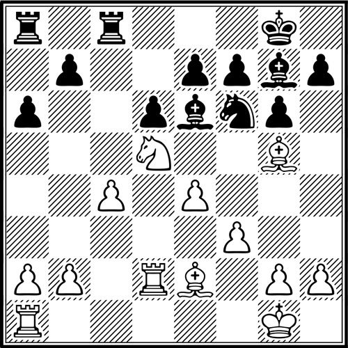

Diagram 408
[Level: 1900 - 2200]

Black to move
White is threatening to win by Nb6 or Nxe7+, while chopping on f6 is also looming. It’s clear that white’s Knight has to be taken, but with what? Black usually tries to avoid giving up the two Bishops by …Bxd5 in analogous positions, but taking with the Knight might hang the e7-pawn (which is often indirectly protected, and this might or might not be the case here). What is the right way to capture on d5?